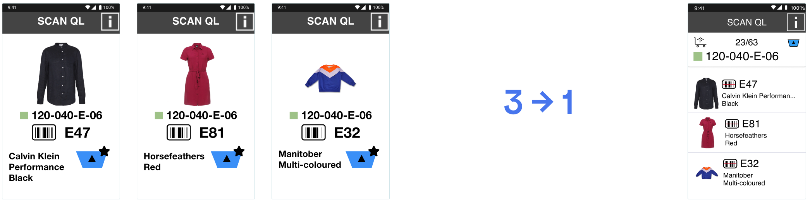
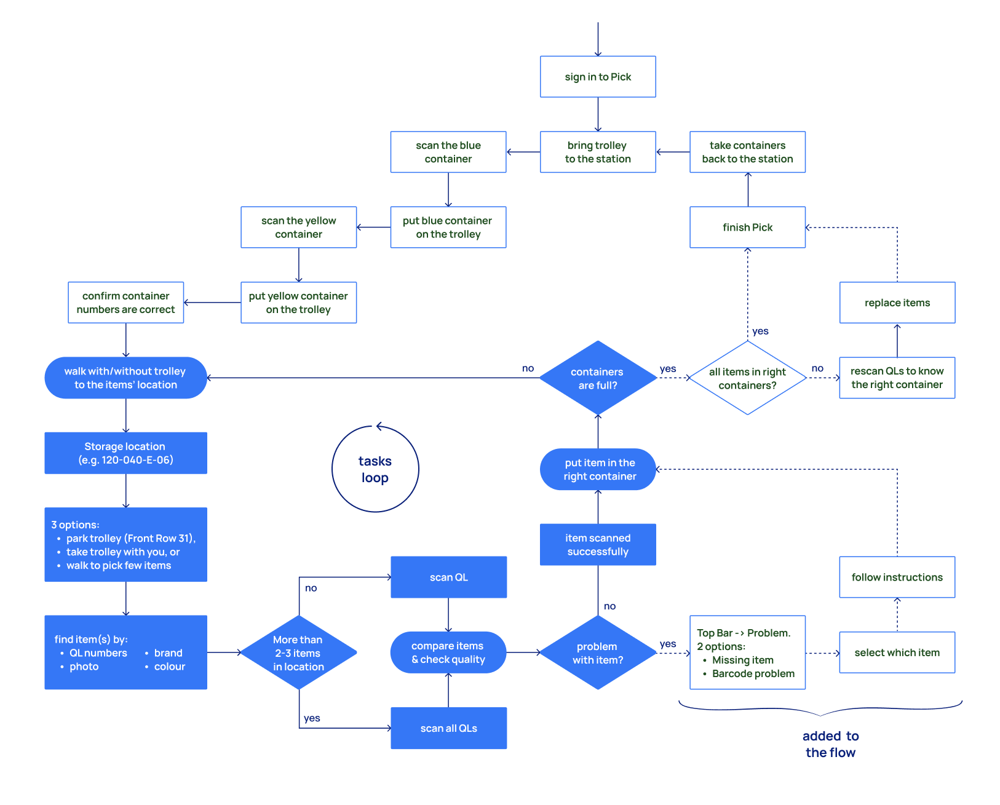
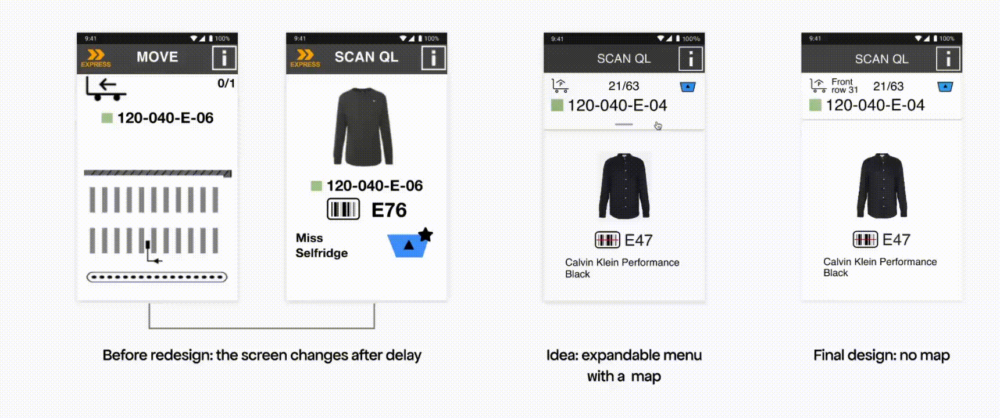
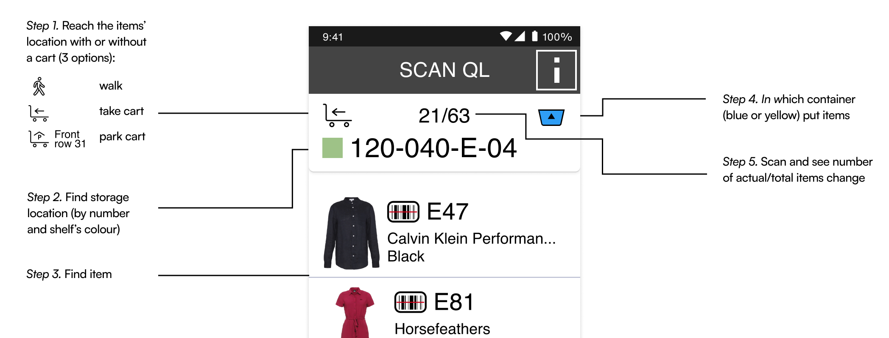

How Zalando increased warehouse operations by 40%
Redesigning a warehouse picking flow. 3 screens turned into 1, which saved time and money

Overview
"2 seconds doesn't sound like much"
Until you multiply it.
At warehouse scale, seconds compound into hours. The team calculated 40% time savings for affected operations.
Understanding the Domain
First, I learned every detail of the process before designing screens.

Then I mapped the user flow. Because of this, I caught an edge case:

The goal is the same interface, rearranged for efficiency
While designing, I tried to use the new set of icons and components, I just created. None of it worked.
Then a senior designer told me, "Stop trying to be creative". So I used the same old UI, just rearranged existing elements.
I understood that by beautifying the app, I'd only confuse the users. Warehouse workers would waste time on relearning. So to reduce time, I designed almost an identical screen, just adapted to 2-3 items.
Four design decisions that shaped the solution
1. Removing the route map
Users used a storage location number (ex. 120-040-E-06) to find items in the new location. Map wasn't helpful.

2. Introducing “location bar”
Separated location info (top bar) from info about an item (main area).

3. Container shown once
To save space and make the task easier for users, together with developers we decided to not display items that go to different containers (blue or yellow), but instead only display the container once in the top app bar for all 2-3 items.
4. Success feedback that matters
To save space and make the task easier for users, together with developers we decided to not display items that go to different containers (blue or yellow), but instead only display the container once in the top app bar for all 2-3 items.
For single items, users don't need success icons. For multiple items, they need to know which item was just scanned. That's why I added a checkmark icon.
“Missing item” icon indicates when an item is reported missing.
Usability testing
We ran an A/B test: old flow (1 item) vs new flow (2-3 items). Participants completed picking tasks in a simulated warehouse setup while we measured task time, errors, and mental effort.
What we learned: Users identify items by:
Colour (“if items are not black or blue”),
Size (“if it’s jeans, then it’s a big bag”),
QL number.
This validated our UI priorities — photo and QL code must be prominent.
Limitation: We tested with office workers, not pickers. But pre-dev testing catches usability issues cheaply. Real picker validation happens post-launch.
My contract ended before final results. But positive feedback and time-saving logic suggest successful implementation.
"I prefer the sequential flow. It was hard to remember those items. But it was clear when the box switched."
— Participant's feedback during testing